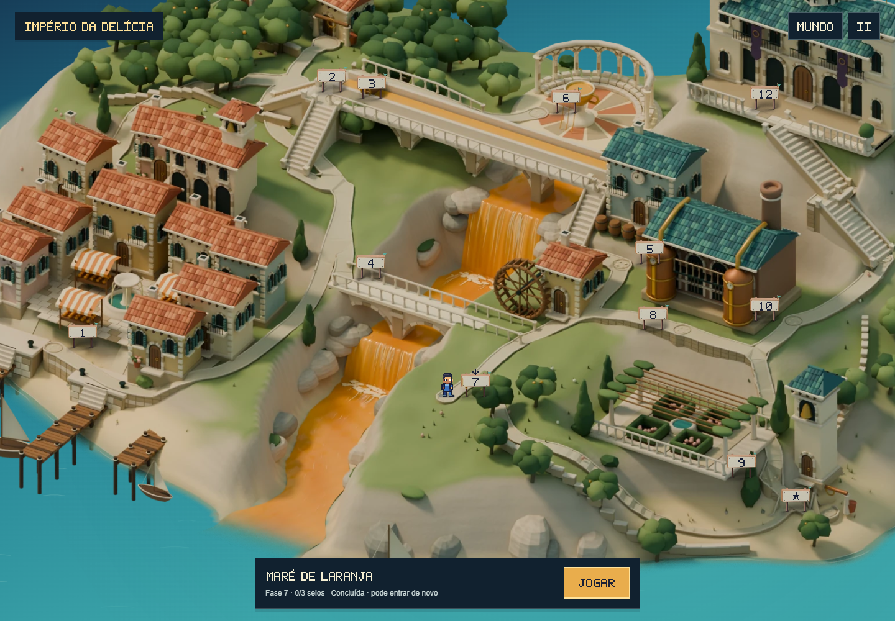
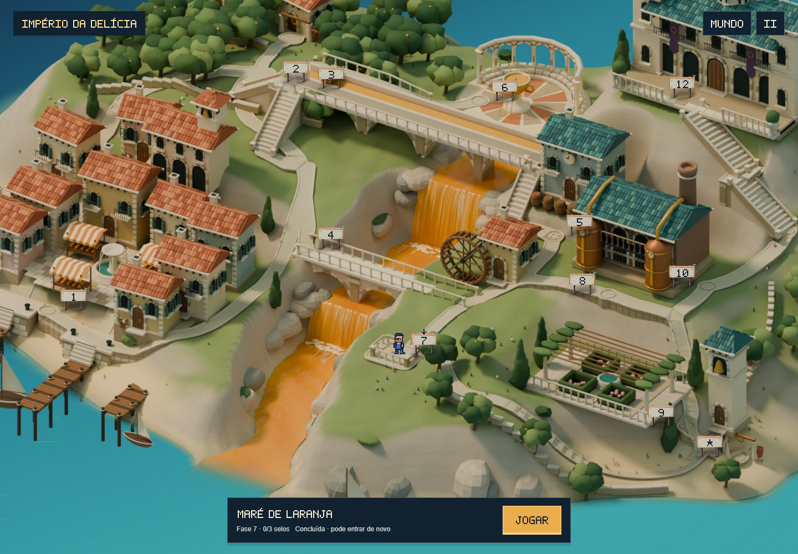
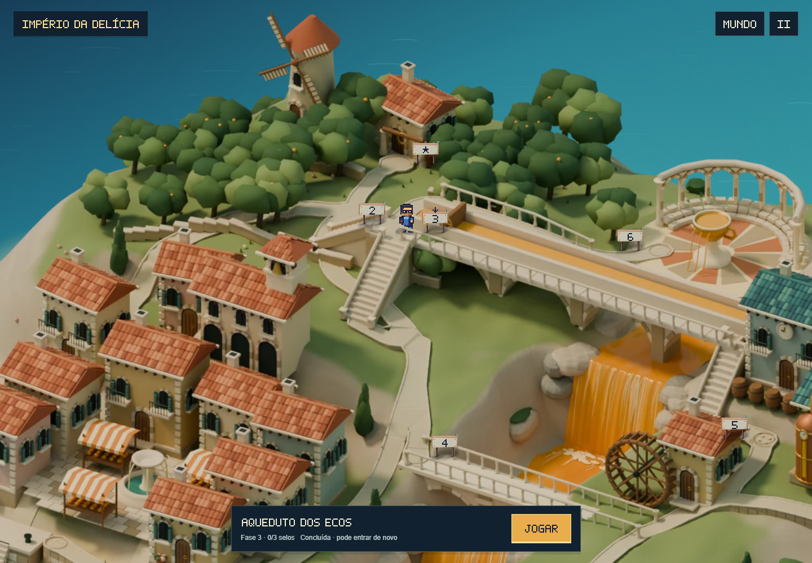
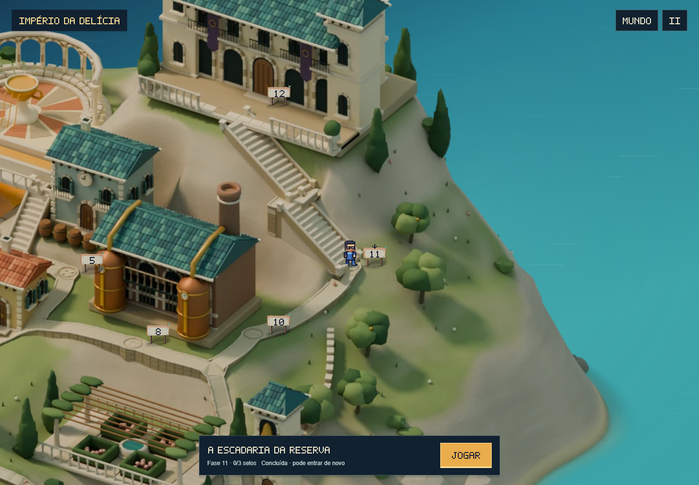
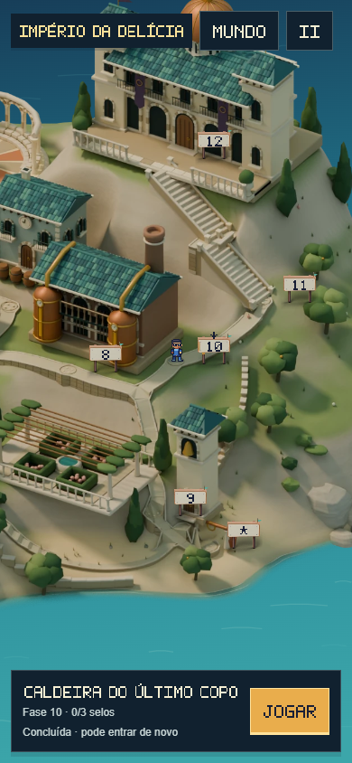

Super Feka Gaps World · ilha v9 · 13/10/2026
Pedras ajustadas às curvas.
Uma chegada junto à cachoeira.
As bordas foram reconstruídas sobre o contorno dos caminhos. As pedras agora acompanham as curvas e deixam livres as entradas da ponte e das escadas. Na Maré de Laranja, um pequeno mirante dá forma ao fim do percurso.
Mirante da Maré de Laranja


Antes · v8Agora · v9O calçamento e a fundação formam uma única peça com o caminho. Guarda-corpos baixos, banco e lajes maiores usam a mesma pedra da ilha. A entrada permanece aberta e o ponto de chegada de Feka foi preservado.
Curvas, escadas e ponte

 Antes · v8Agora · v9
Antes · v8Agora · v9As antigas bordas de blocos sobrepostos deram lugar a pedras com cortes ajustados, juntas discretas e cantos chanfrados. Cada trecho acompanha a altura real do piso.
Subida do palácio

Antes · v8Agora · v9Comparações capturadas no jogo com a mesma câmera, posição e interface.
Caminhada no jogo
No celular
